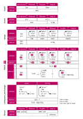

While compilers are generally pretty smart, they don’t always generate the most optimal assembly, especially when atomic operations are involved. If you’re experimenting and find cases where you feel confused by a seemingly needless complexity in the assembly, that often just means there are more optimization opportunities for a future version of the compiler.
Understanding the Processor
Understanding the Processor
While the theory from Chapters 2 and 3 is all we need to write correct concurrent code, it can additionally be very useful to develop an approximate understanding of what goes on in practice at the processor level. In this chapter, we’ll explore the machine instructions that atomic operations compile down to, how different processor architectures differ, why a weak version of compare_exchange exists, what memory ordering means at the lowest level of individual instructions, and how caching relates to it all.
The goal of this chapter is not to understand every relevant detail of every single processor architecture. That would take many bookshelves full of books, many of which have probably not been written or are not publicly available. Instead, the goal of this chapter is to develop a general idea of how atomics work at the processor level, to be able to make more informed decisions when implementing and optimizing code involving atomics. And, of course, to simply satisfy our curiosity about what goes on behind the scenes—taking a break from all the abstract theory.
To make things as concrete as possible, we’ll focus on two specific processor architectures:
x86-64:
The 64-bit version of the x86 architecture implemented by Intel and AMD processors used in the majority of laptops, desktops, servers, and some game consoles. While the originally 16-bit x86 architecture and its very popular 32-bit extension were developed by Intel, the 64-bit version that we now call x86-64 was initially an extension developed by AMD, often referred to as AMD64. Intel also developed its own 64-bit architecture, IA-64, but ended up adopting AMD’s more popular x86 extension instead (under the names IA-32e, EM64T, and later Intel 64).
ARM64:
The 64-bit version of the ARM architecture used by nearly all modern mobile devices, high-performance embedded systems, and also increasingly in recent laptops and desktops. It is also known as AArch64 and was introduced as part of ARMv8. Earlier (32-bit) versions of ARM, which are similar in many ways, are used in an even wider variety of applications. Many popular microcontrollers in every kind of embedded system imaginable, from cars to electronic COVID tests, are based on ARMv6 and ARMv7.
These two architectures are unalike in many ways. Most importantly, they take different approaches to atomics. Understanding how atomics work on both of them provides us with a more general understanding that is transferable to many other architectures.
Processor Instructions
We can develop an approximate understanding of how things work at the processor level by taking a close look at the output of the compiler, the exact instructions that the processor will execute.
Brief Introduction to Assembly
When compiling software written in any compiled language like Rust or C, your code gets translated into machine instructions that can be executed by the processor that will eventually run your program. These instructions are highly specific to the processor architecture you’re compiling your program for.
These instructions, also called machine code, are encoded in binary form, which is quite unreadable to us humans. Assembly is the human-readable representation of these instructions. Every instruction is represented by one line of text, usually starting with a single word or acronym to identify the instruction, followed by its arguments or operands. An assembler converts the text representation to binary representation, and a disassembler does the opposite.
After compiling from a language like Rust, most of the structure of the original source code is gone. Depending on optimization level, functions and function calls might still be recognizable. However, types such as structs or enums have been reduced to bytes and addresses, and loops and conditionals have been reduced to a flat structure with basic jump or branch instructions.
Here’s an example of what a snippet of assembly for a small part of a program might look like, for some made-up architecture:
ldr x, 1234 // load from memory address 1234 into x
li y, 0 // set y to zero
inc x // increment x
add y, x // add x to y
mul x, 3 // multiply x by 3
cmp y, 10 // compare y to 10
jne -5 // jump five instructions back if not equal
str 1234, x // store x to memory address 1234In this example, x and y are names of registers. Registers are part of the processor, not of the main memory, and usually hold a single integer or memory address. On 64-bit architectures, they are generally 64 bits in size. The number of registers varies per architecture, but is usually very limited. Registers are basically used as a temporary scratchpad in calculations, a place to keep intermediate results before storing things back to memory.
Constants that refer to specific memory addresses, such as 1234 and -5 in the example above, are often replaced with more human-readable labels. The assembler will automatically replace them with the actual address when converting assembly to binary machine code.
Using labels, the previous example might look like this instead:
ldr x, SOME_VAR
li y, 0
my_loop: inc x
add y, x
mul x, 3
cmp y, 10
jne my_loop
str SOME_VAR, xSince the names of the labels are only part of the assembly, but not of the binary machine code, a disassembler will not know what labels were originally used and will most likely just use meaningless generated names like label1 and var2.
A full course on assembly for all the different architectures falls outside the scope of this book, but is not a prerequisite for reading this chapter. A very general understanding is more than enough to understand the examples, as we’ll only be reading assembly, not writing it. The relevant instructions in each example will be explained in enough detail to be able to follow along with no prior experience with assembly.
To look at the exact machine code that the Rust compiler produces, we have several options. We could compile our code as usual, and then use a disassembler (such as objdump) to turn the produced binary file back into assembly. Using the debug information the compiler produces as part of the compilation process, the disassembler can produce labels that correspond to the original function names of the Rust source code. A downside of this method is that you need a disassembler that supports the specific processor architecture you’re compiling for. While the Rust compiler supports many architectures, many disassemblers only support the one architecture that they were compiled for.
A more direct option is to ask the compiler to produce assembly instead of a binary by using the --emit=asm flag to rustc. A downside of this method is that the produced output contains a lot of irrelevant lines, containing information for the assembler and debug tools that we don’t need.
There are great tools such as cargo-show-asm that integrate with cargo and automate the process of compiling your crate with the right flags, finding the relevant assembly for the function you’re interested in, and highlighting the relevant lines containing the actual instructions.
For relatively small snippets, the easiest and most recommended way is to use a web service like the excellent Compiler Explorer by Matt Godbolt. This website allows you to write code in a number of languages, including Rust, and directly see corresponding compiled assembly using the selected compiler version. It even uses coloring to show which lines of Rust correspond to which lines of assembly, as far as such a correspondence still exists after optimization.
Since we want to look at the assembly for different architectures, we’ll need to specify an exact target for the Rust compiler to compile to. We’ll use x86_64-unknown-linux-musl for x86-64 and aarch64-unknown-linux-musl for ARM64. These are already supported directly in Compiler Explorer. If you’re compiling locally, for example using cargo-show-asm or the other methods mentioned above, you’ll need to make sure you’ve installed the Rust standard library for these targets, which is usually done using rustup target add.
In all cases, the target to compile for is selected using the --target compiler flag. For example, --target=aarch64-unknown-linux-musl. If you don’t specify any target, it’ll automatically pick the platform you’re currently on. (Or, in the case of Compiler Explorer, the platform that it is hosted on, which is currently x86_64-unknown-linux-gnu.)
In addition, it’s advisable to enable the -O flag to enable optimization (or --release when using Cargo), as that will enable optimization and disable overflow checking, which can significantly reduce the amount of produced assembly for the small functions we’ll be looking at.
To try it out, let’s look at the assembly for x86-64 and ARM64 for the following function:
pub fn add_ten(num: &mut i32) {
*num += 10;
}Using -O --target=aarch64-unknown-linux-musl as the compiler flags with any of the methods described above, we’ll get something like the following assembly output for ARM64:
add_ten:
ldr w8, [x0]
add w8, w8, #10
str w8, [x0]
retThe x0 register contains the argument to our function, num, the address of the i32 to increment by ten. First, the ldr instruction loads the 32-bit value from that memory address into the w8 register. Then, the add instruction adds ten to w8 and stores the result back into w8. And afterwards, the str instruction stores the w8 register back into the same memory address. Finally, the ret instruction marks the end of the function and causes the processor to jump back and continue with the function that called add_ten.
If we compile the exact same code for x86_64-unknown-linux-musl, we’ll get something like this instead:
add_ten:
add dword ptr [rdi], 10
retThis time, a register called rdi is used for the num argument. More interestingly, on x86-64, a single add instruction can do what takes three instructions on ARM64: loading, incrementing, and storing a value.
This is usually the case on a complex instruction set computer (CISC) architecture, such as x86. Instructions on such an architecture often have many variants, for example to operate on a register or to directly operate on memory of certain size. (The dword in the assembly specifies a 32-bit operation.)
In contrast, a reduced instruction set computer (RISC) architecture, like ARM, usually has a simpler set of instructions with very few variants. Most instructions can only operate on registers, and loading and storing to memory takes a separate instruction. This allows for a simpler processor, which can result in a reduction in cost or sometimes higher performance.
This difference is especially relevant for atomic fetch-and-modify instructions, as we’ll see momentarily.
Note
Load and Store
Before we dive into anything more advanced, let’s first look at the instructions used for the most basic atomic operations: load and store.
A regular non-atomic store through a &mut i32 takes just a single instruction on both x86-64 and ARM64, as shown below:
| Rust source | Compiled x86-64 | Compiled ARM64 |
|---|---|---|
|
|
|
On x86-64, the very versatile mov instruction is used to copy ("move") data from one place to another; in this case, from a zero constant to memory. On ARM64, the str (store register) instruction is used to store a 32-bit register into memory. In this case, the special wzr register is used, which always contains zero.
If we change the code to instead use a relaxed atomic store to an AtomicI32, we get:
| Rust source | Compiled x86-64 | Compiled ARM64 |
|---|---|---|
|
|
|
Perhaps somewhat surprisingly, the assembly is identical to the non-atomic version. As it turns out, the mov and str instructions were already atomic. They either happened, or they didn’t happen at all. Apparently, any difference between &mut i32 and &AtomicI32 here is only relevant for the compiler checks and optimizations, but is meaningless for the processor—at least for relaxed store operations on these two architectures.
The same thing happens when we look at relaxed load operations:
| Rust source | Compiled x86-64 | Compiled ARM64 |
|---|---|---|
|
|
|
|
|
|
On x86-64 the mov instruction is used again, this time to copy from memory into the 32-bit eax register. On ARM64, the ldr (load register) instruction is used to load the value from memory into the w0 register.
Note
The 32-bit eax and w0 registers are used for passing back a 32-bit return value of a function. (For 64-bit values, the 64-bit rax and x0 registers are used.)
While the processor apparently does not differentiate between atomic and non-atomic stores and loads, we cannot safely ignore the difference in our Rust code. If we use a &mut i32, the Rust compiler may assume that no other thread can concurrently access the same i32, and might decide to transform or optimize the code in such a way that a store operation no longer results in a single corresponding store instruction. For example, it would be perfectly correct, although somewhat unusual, for a non-atomic 32-bit load or store to happen with two separate 16-bit instructions.
Read-Modify-Write Operations
Things get far more interesting for read-modify-write operations such as addition. As discussed earlier in this chapter, a non-atomic read-modify-write operation usually compiles to three separate instructions (read, modify, and write) on a RISC architecture like ARM64, but can often be done in a single instruction on a CISC architecture like x86-64. This short example demonstrates that:
| Rust source | Compiled x86-64 | Compiled ARM64 |
|---|---|---|
|
|
|
Before we even look at the corresponding atomic operation, we can reasonably assume that this time we will see a difference between the non-atomic and atomic versions. The ARM64 version here is clearly not atomic, as loading and storing happens in separate steps.
While not directly obvious from the assembly itself, the x86-64 version is not atomic. The add instruction will be split by the processor into several microinstructions behind the scenes, with separate steps for loading the value and storing the result. This would be irrelevant on a single-core computer, as switching a processor core between threads generally only happens between instructions. However, when multiple cores are executing instructions in parallel, we can no longer assume instructions all happen atomically without considering the multiple steps involved in executing a single instruction.
x86 lock prefix
To support multi-core systems, Intel introduced an instruction prefix called lock. It is used as a modifier to instructions like add to make their operation atomic.
The lock prefix originally caused the processor to temporarily block all other cores from accessing memory for the duration of the instruction. While this is a simple and effective way to make something appear as atomic to the other cores, it can be quite inefficient to stop the world for every atomic operation. Newer processors have a much more advanced implementation of the lock prefix, which doesn’t stop other cores from operating on unrelated memory, and allows cores to do useful things while waiting for a certain piece of memory to become available.
The lock prefix can only be applied to a very limited number of instructions, including add, sub, and, not, or, and xor, which are all very useful operations to be able to do atomically. The xchg (exchange) instruction, which corresponds to the atomic swap operation, has an implicit lock prefix: it behaves like lock xchg regardless of the lock prefix.
Let’s see lock add in action by changing our last example to operate on an AtomicI32:
| Rust source | Compiled x86-64 |
|---|---|
|
|
As expected, the only difference with the non-atomic version is the lock prefix.
In the example above, we ignore the return value from fetch_add, the value of x before the operation. However, if we use that value, the add instruction no longer suffices. The add instruction can provide a little bit of useful information to next instructions, such as whether the updated value was zero or negative, but it does not provide the full (original or updated) value. Instead, another instruction can be used: xadd ("exchange and add"), which puts the originally loaded value into a register.
We can see it in action by making a small modification to our code to return the value that fetch_add returns:
| Rust source | Compiled x86-64 |
|---|---|
|
|
Instead of a constant 10, a register containing the value 10 is now used instead. The xadd instruction will reuse that register to store the old value.
Unfortunately, other than xadd and xchg, none of the other lock-prefixable instructions, like sub, and, and or, have such a variant. For example, there is no xsub instruction. For subtraction that’s no issue, as xadd can be used with a negative value. For and and or, however, there’s no such alternative.
For and, or, and xor operations that affect only a single bit, such as fetch_or(1) or fetch_and(!1), it’s possible to use the bts (bit test and set), btr (bit test and reset), and btc (bit test and complement) instructions. These instructions also allow a lock prefix, change only a single bit, and make the previous value of that one bit available for an instruction that follows, such as a conditional jump.
When these operations affect more than one bit, they cannot be represented by a single x86-64 instruction. Similarly, the fetch_max and fetch_min operations also have no corresponding x86-64 instruction. For these operations, we need a different strategy than a simple lock prefix.
x86 compare-and-exchange instruction
In "Compare-and-Exchange Operations" in Chapter 2, we saw how any atomic fetch-and-modify operation can be implemented as a compare-and-exchange loop. This is exactly what the compiler will use for operations that cannot be represented by a single x86-64 instruction, since this architecture does include a (lock-prefixable) cmpxchg (compare and exchange) instruction.
We can see this in action by changing our last example from fetch_add to fetch_or:
| Rust source | Compiled x86-64 |
|---|---|
|
|
The first mov instruction loads the value from the atomic variable into the eax register. The following mov and or instructions copy that value into ecx and apply the binary or operation, such that eax contains the old value and ecx the new value. The cmpxchg instruction afterwards behaves exactly like the compare_exchange method in Rust. Its first argument is the memory address on which to operate (the atomic variable), the second argument (ecx) is the new value, the expected value is implicitly taken from eax, and the return value is implicitly stored in eax. It also sets a status flag that a subsequent instruction can use to conditionally branch based on whether the operation succeeded or not. In this case, a jne (jump if not equal) instruction is used to jump back to the .L1 label to try again on failure.
Here’s what the equivalent compare-and-exchange loop looks like in Rust, just like we saw in "Compare-and-Exchange Operations" in Chapter 2:
pub fn a(x: &AtomicI32) -> i32 {
let mut current = x.load(Relaxed);
loop {
let new = current | 10;
match x.compare_exchange(current, new, Relaxed, Relaxed) {
Ok(v) => return v,
Err(v) => current = v,
}
}
}Compiling this code results in the exact same assembly as the fetch_or version. This shows that, at least on x86-64, they are indeed equivalent in every way.
Note
On x86-64, there is no difference between compare_exchange and compare_exchange_weak. Both compile down to a lock cmpxchg instruction.
Load-Linked and Store-Conditional Instructions
The closest thing to a compare-and-exchange loop on a RISC architecture is a load-linked/store-conditional (LL/SC) loop. It involves two special instructions that come in a pair: a load-linked instruction, which mostly behaves like a regular load instruction, and a store-conditional instruction, which mostly behaves like a regular store instruction. They are used in a pair, with both instructions targeting the same memory address. The key difference to the regular load and store instructions is that the store is conditional: it refuses to store to memory if any other thread has overwritten that memory since the load-linked instruction.
These two instructions allow us to load a value from memory, modify it, and store the new value back only if nobody has overwritten the value since we loaded it. If that fails, we can simply retry. Once it succeeds, we can safely pretend the whole operation was atomic, since it didn’t get disrupted.
The key to making these instructions feasible and efficient to implement is twofold: (1) only one memory address (per core) can be tracked at a time, and (2) the store-conditional is allowed to have false negatives, meaning that it may fail to store even though nothing has changed that particular piece of memory.
This makes it possible to be less precise when tracking changes to memory, at the cost of perhaps a few extra cycles through an LL/SC loop. Access to memory could be tracked not per byte, but per chunk of 64 bytes, or per kilobyte, or even the entire memory as a whole. Less accurate memory tracking results in more unnecessary cycles through LL/SC loops, significantly reducing performance, but also reducing implementation complexity.
Taking things to the extreme, a basic, hypothetical single-core system could use a strategy where it does not track writes to memory at all. Instead, it could track interrupts or context switches, the events that can cause the processor to switch to another thread. If, in a system without any parallelism, no such event happened, it could safely assume no other thread could have touched the memory. If any such event happened, it could just assume the worst, refuse the store, and hope for better luck in the next iteration of the loop.
ARM load-exclusive and store-exclusive
On ARM64, or at least in the first version of ARMv8, no atomic fetch-and-modify or compare-and-exchange operation can be represented by a single instruction. True to its RISC nature, the load and store steps are separate from the calculation and comparison.
ARM64’s load-linked and store-conditional instructions are called ldxr (load exclusive register) and stxr (store exclusive register). In addition, the clrex (clear exclusive) instruction can be used as an alternative to stxr to stop tracking writes to memory without storing anything.
To see them in action, let’s see what happens when we do an atomic addition on ARM64:
| Rust source | Compiled ARM64 |
|---|---|
|
|
We get something that looks quite similar to the non-atomic version we got before (in "Read-Modify-Write Operations"): a load instruction, an add instruction, and a store instruction. The load and store instructions have been replaced by their "exclusive" LL/SC version, and a new cbnz (compare and branch on nonzero) instruction appeared. The stxr instruction stores a zero in w10 if it succeeded, or a one if it didn’t. The cbnz instruction uses this to restart the whole operation if it failed.
Note that unlike with lock add on x86-64, we don’t need to do anything special to retrieve the old value. In the example above, the old value will still be available in register w8 after the operation succeeds, so there’s no need for a specialized instruction like xadd.
This LL/SC pattern is quite flexible: it doesn’t just work for a limited set of operations like add and or, but for virtually any operation. We can just as easily implement an atomic fetch_divide or fetch_shift_left by putting the corresponding instruction(s) between the ldxr and stxr instructions. However, if there are too many instructions between them, there’s an increasingly high chance of disruption resulting in extra cycles. Generally, the compiler will attempt to keep the number of instructions in an LL/SC pattern as small as possible, to avoid LL/SC loops that would rarely—or even never—succeed and thus could spin forever.
ARMv8.1 Atomic Instructions
A later version of ARM64, part of ARMv8.1, also includes new CISC-style instructions for common atomic operations. For example, the new ldadd (load and add) instruction is equivalent to an atomic fetch_add operation, without the need for an LL/SC loop. It even includes instructions for operations like fetch_max, which don’t exist on x86-64.
It also includes a cas (compare and swap) instruction corresponding to compare_exchange. When this instruction is used, there’s no difference between compare_exchange and compare_exchange_weak, just like on x86-64.
While the LL/SC pattern is quite flexible and nicely fits the general RISC pattern, these new instructions can be more performant, as they can be easier to optimize for with specialized hardware.
Compare-and-exchange on ARM
The compare_exchange operation maps quite nicely onto this LL/SC pattern by using a conditional branch instruction to skip the store instruction if the comparison failed. Let’s look at the generated assembly:
| Rust source | Compiled ARM64 |
|---|---|
|
|
Note
Note that a compare_exchange_weak operation is normally used in a loop that repeats if the comparison fails. For this example, however, we only call it once and ignore its return value, which shows us the relevant assembly without distractions.
The ldxr instruction loads the value, which is then immediately compared with the cmp (compare) instruction to the expected value of 5. The b.ne (branch if not equal) instruction will cause a jump to the .L1 label if the value was not as expected, at which point the clrex instruction is used to abort the LL/SC pattern. If the value was five, the flow continues through the mov and stxr instructions to store the new value of six in memory, but only if nothing has overwritten the five in the meantime.
Remember that stxr is allowed to have false negatives; it might fail here even if the five wasn’t overwritten. That’s okay, because we’re using compare_exchange_weak, which is allowed to have false negatives too. In fact, this is the reason why a weak version of compare_exchange exists.
If we replace compare_exchange_weak with compare_exchange, we get nearly identical assembly, except for an extra branch to restart the operation if it failed:
| Rust source | Compiled ARM64 |
|---|---|
|
|
As expected, there’s now an extra cbnz (compare and branch on nonzero) instruction to restart the LL/SC loop on failure. Additionally, the mov instruction has been moved out of the loop, to keep the loop as short as possible.
Optimization of Compare-and-Exchange Loops
As we saw in "x86 compare-and-exchange instruction", a fetch_or operation and the equivalent compare_exchange loop compile down to the exact same instructions on x86-64. One might expect the same to happen on ARM, at least with compare_exchange_weak, as the load and weak compare-and-exchange operations could directly be mapped to the LL/SC instructions.
Unfortunately, this is currently (as of Rust 1.66.0) not what happens.
While this might change in the future as the compiler is always improving, it’s quite hard for a compiler to safely turn a manually written compare-and-exchange loop into the corresponding LL/SC loop. One of the reasons is that there’s a limit on the number and type of instructions that can be put between the ldxr and stxr instructions, which is not something that the compiler is designed to keep in mind while applying other optimizations. At the time when patterns like a compare-and-exchange loop are still recognizable, the exact instructions that an expression will compile down to are not known yet, making this a very tricky optimization to implement for the general case.
So, at least until we get even smarter compilers, it’s advisable to use the dedicated fetch-and-modify methods rather than a compare-and-exchange loop, if possible.
Caching
Reading and writing memory is slow, and can easily cost as much time as executing tens or hundreds of instructions. This is why all performant processors implement caching, to avoid interacting with the relatively slow memory as much as possible. The exact implementation details of memory caches in modern processors are complex, partially proprietary, and, most importantly, mostly irrelevant to us when writing software. After all, the name cache comes from the French word caché, meaning hidden. Nevertheless, understanding the basic principles behind how most processors implement caching can be extremely useful when optimizing software for performance. (Not that we need an excuse to learn more about an interesting topic, of course.)
Except for very small microcontrollers, virtually all modern processors use caching. Such a processor never interacts directly with main memory, but instead routes every single read and write request through its cache. If an instruction needs to read something from memory, the processor will ask its cache for that data. If it is already cached, the cache will quickly respond with the cached data, avoiding interacting with main memory. Otherwise, it’ll have to take the slow path, where the cache might have to ask the main memory for a copy of the relevant data. Once the main memory responds, not only will the cache finally respond to the original read request, but it will also remember the data, such that it can respond more quickly the next time this data is requested. If the cache becomes full, it makes space by dropping some old data it deems least likely to be useful.
When an instruction wants to write something to memory, the cache could decide to hold on to the modified data without writing it to main memory. Any subsequent read requests for the same memory address will then get a copy of the modified data, ignoring the outdated data in main memory. It would only actually write the data back to main memory when the modified data needs to be dropped from the cache to make space.
In most processor architectures, the cache reads and writes memory in blocks of 64 bytes, even if only a single byte was requested. These blocks are often called cache lines. By caching the entire 64-byte block that surrounds the requested byte, any subsequent instructions that need to access any of the other bytes in that block will not have to wait for main memory.
Cache Coherence
In modern processors, there is usually more than one layer of caching. The first cache, or level one (L1) cache, is the smallest and fastest. Instead of talking to the main memory, it talks to the level two (L2) cache, which is much larger, but slower. The L2 cache might be the one to talk to main memory, or there might be yet another, larger and slower, L3 cache—perhaps even an L4 cache.
Adding extra layers doesn’t change much about how they work; each layer can operate independently. Where things get interesting, however, is when there are multiple processor cores that each have their own cache. In a multi-core system, each processor core usually has its own L1 cache, while the L2 or L3 caches are often shared with some or all of the other cores.
A naive caching implementation would break down under these conditions, as the cache can no longer assume it controls all interactions with the next layer. If one cache would accept a write and mark some cache line as modified without informing the other caches, the state of the caches could become inconsistent. Not only would the modified data not be available to the other cores until the cache writes the data down to the next level(s), it could end up conflicting with different modifications cached in other caches.
To solve this problem, a cache coherence protocol is used. Such a protocol defines how exactly the caches operate and communicate with each other to keep everything in a consistent state. The exact protocol used varies per architecture, processor model, and even per cache level.
We’ll discuss two basic cache coherence protocols. Modern processors use many variations of these.
The write-through protocol
In caches that implement the write-through cache coherence protocol, writes are not cached but immediately sent through to the next layer. The other caches are connected to the next layer through the same shared communication channel, which means that they can observe the other caches' communications to the next layer. When a cache observes a write for an address it currently has cached, it immediately either drops or updates its own cache line to keep everything consistent.
Using this protocol, caches never contain any cache lines in a modified state. While this simplifies things significantly, it nullifies any benefits of caching for writes. When optimizing just for reading, this can be a great choice.
The MESI protocol
The MESI cache coherence protocol is named after the four possible states it defines for a cache line: modified, exclusive, shared and invalid. Modified (M) is used for cache lines that contain data that has been modified but not yet written to memory (or the next level cache). Exclusive (E) is used for cache lines that contain unmodified data that’s not cached in any other cache (at the same level). Shared (S) is used for unmodified cache lines that might also appear in one or more of the other (same level) caches. Invalid (I) is used for unused (empty or dropped) cache lines, which do not contain any useful data.
Caches that use this protocol communicate with all the other caches at the same level. They send each other updates and requests to make it possible for them to stay consistent with each other.
When a cache gets a request for an address it has not yet cached, also called a cache miss, it does not immediately request it from the next layer. Instead, it first asks the other caches (at the same level) if any of them have this cache line available. If none of them have it, the cache will continue to request the address from the (slower) next layer, and mark the resulting new cache line as exclusive (E). When this cache line is then modified by a write operation, the cache can change the state to modified (M) without informing the others, since it knows none of the others have the same cache line cached.
When requesting a cache line that’s already available in any of the other caches, the result is a shared (S) cache line, obtained directly from the other cache(s). If the cache line was in the modified (M) state, it’ll first be written (or flushed) to the next layer, before changing it to shared (S) and sharing it. If it was in the exclusive (E) state, it’ll be changed to shared (S) immediately.
If the cache wants exclusive rather than shared access (for example, because it is going to modify the data right after), the other cache(s) will not keep the cache line in shared (S) state, but instead drop it entirely by changing it to invalid (I). In this case, the result is an exclusive (E) cache line.
If a cache needs exclusive access to a cache line it already has available in the shared (S) state, it simply tells the others to drop the cache line before upgrading it to exclusive (E).
There are several variations of this protocol. For example, the MOESI protocol adds an extra state to allow sharing of modified data without immediately writing it to the next layer, and the MESIF protocol uses an extra state to decide which cache responds to a request for a shared cache line that’s available in multiple caches. Modern processors often use more elaborate and proprietary cache coherence protocols.
Impact on Performance
While caching is mostly hidden from us, caching behavior can have significant effects on the performance of our atomic operations. Let’s try to measure some of those effects.
Measuring the speed of a single atomic operation is very tricky, since they are extremely fast. To be able to get some useful numbers, we’ll have to repeat an operation, say, a billion times, and measure how long that takes in total. For example, we could try to measure the time it takes for a billion load operations like this:
static A: AtomicU64 = AtomicU64::new(0);
fn main() {
let start = Instant::now();
for _ in 0..1_000_000_000 {
A.load(Relaxed);
}
println!("{:?}", start.elapsed());
}Unfortunately, this does not work as expected.
When running this with optimizations turned on (e.g., with cargo run --release or rustc -O), we’ll see an unreasonably low measured time. What happened is that the compiler was smart enough to understand that we’re not using the loaded values, so it decided to completely optimize the "unnecessary" loop away.
To avoid this, we can use the special std::hint::black_box function. This function takes an argument of any type, which it just returns without doing anything. What makes this function special is that the compiler will try its best not to assume anything about what the function does; it treats it like a "black box" that could do anything.
We can use this to avoid certain optimizations that would render a benchmark useless. In this case, we can pass the result of the load operation to black_box() to stop any optimizations that assume we don’t actually need the loaded values. That’s not enough, though, since the compiler could still assume that A is always zero, making the load operations unnecessary. To avoid that, we can pass a reference to A to black_box() at the start, such that the compiler may no longer assume there’s only one thread that accesses A. After all, it must assume that black_box(&A) might have spawned an extra thread that interacts with A.
Let’s try that out:
use std::hint::black_box;
static A: AtomicU64 = AtomicU64::new(0);
fn main() {
black_box(&A); // New!
let start = Instant::now();
for _ in 0..1_000_000_000 {
black_box(A.load(Relaxed)); // New!
}
println!("{:?}", start.elapsed());
}The output fluctuates a bit when running this multiple times, but on a not-so-recent x86-64 computer, it seems to give a result of about 300 milliseconds.
To see any caching effects, we’ll spawn a background thread that interacts with the atomic variable. That way, we can see if it affects the load operations of the main thread or not.
First, let’s try that with just load operations on the background thread, as follows:
static A: AtomicU64 = AtomicU64::new(0);
fn main() {
black_box(&A);
thread::spawn(|| { // New!
loop {
black_box(A.load(Relaxed));
}
});
let start = Instant::now();
for _ in 0..1_000_000_000 {
black_box(A.load(Relaxed));
}
println!("{:?}", start.elapsed());
}Note that we’re not measuring the performance of the operations on the background thread. We’re still only measuring how long it takes for the main thread to perform a billion load operations.
Running this program results in similar measurements as before: it fluctuates a bit around 300 milliseconds when tested on the same x86-64 computer. The background thread has no significant effect on the main thread. They presumably each run on a separate processor core, but the caches of both cores contain a copy of A, allowing for very fast access.
Now let’s change the background thread to perform store operations instead:
static A: AtomicU64 = AtomicU64::new(0);
fn main() {
black_box(&A);
thread::spawn(|| {
loop {
A.store(0, Relaxed); // New!
}
});
let start = Instant::now();
for _ in 0..1_000_000_000 {
black_box(A.load(Relaxed));
}
println!("{:?}", start.elapsed());
}This time, we do see a significant difference. Running this program on the same x86-64 machine now results in an output that fluctuates around three whole seconds, almost ten times as much as before. More recent computers will show a less significant but still very measurable difference. For example, it went from 350 milliseconds to 500 milliseconds on a recent Apple M1 processor, and from 250 milliseconds to 650 milliseconds on a very recent x86-64 AMD processor.
This behavior matches our understanding of cache coherence protocols: a store operation requires exclusive access to a cache line, which slows down subsequent load operations on other cores that no longer share the cache line.
Failing Compare-and-Exchange Operations
Interestingly, on most processor architectures, the same effect we saw with store operations also happens when the background thread performs only compare-and-exchange operations, even if they all fail.
To try that out, we can replace the store operation (of the background thread) with a call to compare_exchange that will never succeed:
…
loop {
// Never succeeds, because A is never 10.
black_box(A.compare_exchange(10, 20, Relaxed, Relaxed).is_ok());
}
…Because A is always zero, this compare_exchange operation will never succeed. It’ll load the current value of A, but never update it to a new value.
One might reasonably expect this to behave the same as a load operation, since it does not modify the atomic variable. However, on most processor architectures, the instruction(s) of compare_exchange will claim exclusive access of the relevant cache line regardless of whether the comparison succeeds or not.
This means that it can be beneficial to not use compare_exchange (or swap) in a spin loop like we did for our SpinLock in Chapter 4, but instead use a load operation first to check if the lock has been unlocked. That way, we avoid unnecessarily claiming exclusive access to the relevant cache line.
Since caching happens per cache line, not per individual byte or variable, we should be able to see the same effect using adjacent variables rather than the same one. To try this out, let’s use three atomic variables instead of one, have the main thread use only the middle variable, and make the background thread use only the other two, as follows:
static A: [AtomicU64; 3] = [
AtomicU64::new(0),
AtomicU64::new(0),
AtomicU64::new(0),
];
fn main() {
black_box(&A);
thread::spawn(|| {
loop {
A[0].store(0, Relaxed);
A[2].store(0, Relaxed);
}
});
let start = Instant::now();
for _ in 0..1_000_000_000 {
black_box(A[1].load(Relaxed));
}
println!("{:?}", start.elapsed());
}Running this produces similar results as before: it takes several seconds on that same x86-64 computer. Even though A[0], A[1], and A[2] are each used by only one thread, we still see the same effects as if we’re using the same variable on both threads. The reason is that A[1] shares a cache line with either or both of the others. The processor core running the background thread repeatedly claims exclusive access to the cache line(s) containing A[0] and A[2], which also contains A[1], slowing down "unrelated" operations on A[1]. This effect is called false sharing.
We can avoid this by spacing the atomic variables further apart, so they each get their own cache line. As mentioned before, 64 bytes is a reasonable guess for the size of a cache line, so let’s try wrapping our atomics in a 64-byte aligned struct, as follows:
#[repr(align(64))] // This struct must be 64-byte aligned.
struct Aligned(AtomicU64);
static A: [Aligned; 3] = [
Aligned(AtomicU64::new(0)),
Aligned(AtomicU64::new(0)),
Aligned(AtomicU64::new(0)),
];
fn main() {
black_box(&A);
thread::spawn(|| {
loop {
A[0].0.store(1, Relaxed);
A[2].0.store(1, Relaxed);
}
});
let start = Instant::now();
for _ in 0..1_000_000_000 {
black_box(A[1].0.load(Relaxed));
}
println!("{:?}", start.elapsed());
}The #[repr(align)] attribute enables us to tell the compiler the (minimal) alignment of our type, in bytes. Since an AtomicU64 is only 8 bytes, this will add 56 bytes of padding to our Aligned struct.
Running this program no longer gives slow results. Instead, we get the same results as when we had no background thread at all: about 300 milliseconds when run on the same x86-64 computer as before.
Note
Depending on the type of processor you’re trying this on, you might need to use 128-byte alignment to see the same effect.
The experiment above shows that it can be advisable not to put unrelated atomic variables close to each other. For example, a dense array of small mutexes might not always perform as well as an alternative structure that keeps the mutexes spaced further apart.
On the other hand, when multiple (atomic) variables are related and often accessed in quick succession, it can be good to put them close together. For example, our SpinLock<T> from Chapter 4 stores the T right next to the AtomicBool, which means it’s likely that the cache line containing the AtomicBool will also contain the T, such that a claim for (exclusive) access to one also includes the other. Whether this is beneficial depends entirely on the situation.
Reordering
Consistent caching, for example through the MESI protocol we explored earlier in this chapter, generally does not affect correctness of a program, even when multiple threads are involved. The only observable differences caused by consistent caching come down to differences in timing. However, modern processors implement many more optimizations that can have a big impact on correctness, at least when multiple threads are involved.
At the start of Chapter 3, we briefly discussed instruction reordering, how both the compiler and the processor can change the order of instructions. Focusing just on the processor, here are some examples of various ways in which instructions, or their effects, might happen out of order:
Store buffers
Since writes can be slow, even with caching, processor cores often include a store buffer. Write operations to memory can be stored in this store buffer, which is very quick, to allow the processor to immediately continue with the instructions that follow. Then, in the background, the write operation is completed by writing to the (L1) cache, which can be significantly slower. This way, the processor does not have to wait while the cache coherence protocol jumps into action to get exclusive access to the relevant cache line.
As long as special care is taken to handle subsequent read operations from the same memory address, this is entirely invisible for instructions running as part of the same thread, on the same processor core. However, for a brief moment, the write operation is not yet visible to the other cores, resulting in an inconsistent view of what the memory looks like from different threads running on different cores.
Invalidation queues
Regardless of the exact coherency protocol, caches that operate in parallel need to process invalidation requests: instructions to drop a specific cache line because it’s about to be modified and become invalid. As a performance optimization, it’s common for such requests not to be processed immediately, but to be queued for (slightly) later processing instead. When such invalidation queues are in use, the caches are no longer always consistent, as cache lines might be briefly outdated before they are dropped. However, this has no impact on a single-threaded program, other than speeding it up. The only impact is the visibility of write operations from other cores, which might now appear as (very slightly) delayed.
Pipelining
Another very common processor feature that significantly improves performance is pipelining: executing consecutive instructions in parallel, if possible. Before an instruction finishes executing, the processor might already start executing the next one. Modern processors can often start the execution of quite a few instructions in series while the first one is still in progress.
If each instruction operates on the result from the previous one, this doesn’t help much; they each still need to wait on the result of the one before it. But when an instruction can be executed independently of the previous one, it might even finish first. For example, an instruction that just increments a register might finish very quickly, while a previously started instruction might still be waiting on reading something from memory, or some other slow operation.
While this doesn’t affect a single-threaded program (other than speed), interaction with other cores might happen out of order when an instruction that operates on memory finishes executing before a preceding one does.
There are many ways in which a modern processor might end up executing instructions in an entirely different order than expected. There are many proprietary techniques involved, some of which become public only when a subtle mistake is found that can be exploited by malicious software. When they work as expected, however, they all have one thing in common: they do not affect single-threaded programs, other than timing, but can cause interaction with other cores to appear to happen in an inconsistent order.
Processor architectures that allow for memory operations to be reordered also provide a way to prevent this through special instructions. These instructions might, for example, force the processor to flush its store buffer, or to finish any pipelined instructions, before continuing. Sometimes, these instructions only prevent a certain type of reordering. For example, there might be an instruction to prevent store operations from being reordered with respect to each other, while still allowing load operations to be reordered. Which types of reordering might happen, and how they can be prevented, depends on the processor architecture.
Memory Ordering
When performing any atomic operation in a language like Rust or C, we specify a memory ordering to inform the compiler of our ordering requirements. The compiler will generate the right instructions for the processor to prevent it from reordering instructions in ways that would break the rules.
Which types of instruction reordering are allowed depends on the kind of memory operation. For non-atomic and relaxed atomic operations, any type of reordering is acceptable. At the other extreme, sequentially consistent atomic operations don’t allow for any type of reordering at all.
An acquire operation may not get reordered with any memory operations that follow, while a release operation may not be reordered with any memory operations that precede it. Otherwise, some mutex-protected data might be accessed before acquiring—or after releasing—its mutex, resulting in a data race.
Other-Multi-Copy Atomicity
The ways in which the order of memory operations is affected on some processor architectures, such as those one might find in graphics cards, cannot always be explained by instruction reordering. The effect of two consecutive store operations on one core might become visible in the same order on a second core, but in opposite order on a third core. This could happen, for example, because of inconsistent caching or shared store buffers. This effect can’t be explained by the instructions on the first core being reordered, as that doesn’t explain the inconsistency between the second and third core’s observations.
The theoretical memory model we discussed in Chapter 3 leaves space for such processor architectures by not requiring a globally consistent order for anything but sequentially consistent atomic operations.
The architectures we’re focusing on in this chapter, x86-64 and ARM64, are other-multi-copy atomic, which means that write operations, once they are visible to any core, become visible to all cores at the same time. For other-multi-copy atomic architectures, memory ordering is only a matter of instruction reordering.
Some architectures, such as ARM64, are called weakly ordered, as they allow the processor to freely reorder any memory operation. On the other hand, strongly ordered architectures, such as x86-64, are very restrictive about which memory operations may be reordered.
x86-64: Strongly Ordered
On an x86-64 processor, a load operation will never appear to have happened after a memory operation that follows. Similarly, this architecture doesn’t allow for a store operation to appear to have happened before a preceding memory operation. The only kind of reordering you might see on x86-64 is a store operation getting delayed until after a later load operation.
Note
Because of the reordering restrictions of the x86-64 architecture, it is often described as a strongly ordered architecture, although some prefer to reserve this term for architectures that preserve the order of all memory operations.
These restrictions satisfy all the needs of acquire-loads (because a load is never reordered with a later operation), and of release-stores (because a store is never reordered with an earlier operation). This means that on x86-64, we get release and acquire semantics "for free": release and acquire operations are identical to relaxed operations.
We can verify this by seeing what happens to a few of the snippets from "Load and Store" and "x86 lock prefix" when we change Relaxed to Release, Acquire, or AcqRel:
| Rust source | Compiled x86-64 |
|---|---|
|
|
|
|
|
|
As expected, the assembly is identical, even though we specified a stronger memory ordering.
We can conclude that on x86-64, ignoring potential compiler optimizations, acquire and release operations are just as cheap as relaxed operations. Or, perhaps more accurately, that relaxed operations are just as expensive as acquire and release operations.
Let’s check out what happens for SeqCst:
| Rust source | Compiled x86-64 |
|---|---|
|
|
|
|
|
|
The load and fetch_add operations still result in the same assembly as before, but the assembly for store changed completely. The xor instruction looks a bit out of place, but is just a common way to set the eax register to zero by xor'ing it with itself, which always results in zero. A mov eax, 0 instruction would’ve worked as well, but takes a bit more space.
The interesting part is the xchg instruction, which is normally used for a swap operation: a store operation that also retrieves the old value.
A regular mov instruction like before wouldn’t suffice for a SeqCst store, because it would allow reordering it with a later load operation, breaking the globally consistent order. By changing it to an operation that also performs a load, even though we don’t care about the value it loads, we get the additional guarantee of our instruction not getting reordered with later memory operations, solving the issue.
Note
A SeqCst load operation can still be a regular mov, exactly because SeqCst stores are upgraded to xchg. SeqCst operations guarantee a globally consistent order only with other SeqCst operations. The mov from a SeqCst load might still be reordered with the mov of an earlier non-SeqCst store operation, but that’s perfectly fine.
On x86-64, a store operation is the only atomic operation for which there’s a difference between SeqCst and weaker memory ordering. In other words, x86-64 SeqCst operations other than stores are just as cheap as Release, Acquire, AcqRel, and even Relaxed operations. Or, if you prefer, x86-64 makes Relaxed operations other than stores as expensive as SeqCst operations.
ARM64: Weakly Ordered
On a weakly ordered architecture such as ARM64, all memory operations can potentially be reordered with each other. This means that unlike x86-64, acquire and release operations will not be identical to relaxed operations.
Let’s take a look at what happens on ARM64 for Release, Acquire, and AcqRel:
| Rust source | Compiled ARM64 |
|---|---|
|
|
|
|
|
|
The changes, compared to the Relaxed versions we saw earlier, are very subtle:
str(store register) is nowstlr(store-release register).ldr(load register) is nowldar(load-acquire register).ldxr(load exclusive register) is nowldaxr(load-acquire exclusive register).stxr(store exclusive register) is nowstlxr(store-release exclusive register).
As this shows, ARM64 has special versions of its load and store instructions for acquire and release ordering. Unlike an ldr or ldxr instruction, an ldar or ldaxr instruction will never be reordered with any later memory operation. Similarly, unlike an str or stxr instruction, an stlr or stlxr instruction will never be reordered with any earlier memory operation.
Note
A fetch-and-modify operation using only Release or Acquire ordering instead of AcqRel uses only one of the stlxr and ldaxr instructions, respectively, paired with a regular ldxr or stxr instruction.
In addition to the restrictions required for release and acquire semantics, none of the special acquire and release instructions is ever reordered with any other of these special instructions, making them also suitable for SeqCst.
As demonstrated below, upgrading to SeqCst results in the exact same assembly as before:
| Rust source | Compiled ARM64 |
|---|---|
|
|
|
|
|
|
This means that on ARM64, sequentially consistent operations are exactly as cheap as acquire and release operations. Or, rather, that ARM64 Acquire, Release, and AcqRel operations are as expensive as SeqCst. Unlike x86-64, however, Relaxed operations are relatively cheap, as they don’t result in stronger ordering guarantees than necessary.
ARMv8.1 Atomic Release and Acquire Instructions
As discussed in "ARMv8.1 Atomic Instructions", the ARMv8.1 version of ARM64 includes CISC-style instructions for atomic operations such as ldadd (load and add) as an alternative to an ldxr/stxr loop.
Just like the load and store operations have special versions with acquire and release semantics, these instructions also have variants for stronger memory ordering. Because these instructions involve both a load and a store, they each have three additional variants: one for release (-l), one for acquire (-a), and one for combined release and acquire (-al) semantics.
For example, for ldadd, there is also ldaddl, ldadda, and ldaddal. Similarly, the cas instruction comes with the casl, casa, and casal variants.
Just like for the load and store instructions, the combined release and acquire (-al) variants also suffice for SeqCst operations.
An Experiment
An unfortunate consequence of the popularity of strongly ordered architectures is that certain classes of memory ordering bugs can easily stay undiscovered. Using Relaxed where Acquire or Release is necessary is incorrect, but could accidentally end up working just fine in practice on x86-64, assuming the compiler doesn’t reorder your atomic operations.
Note
Remember that it’s not only the processor that can cause things to happen out of order. The compiler is also allowed to reorder the instructions it produces, as long as it takes the memory ordering constraints into account.
In practice, compilers tend to be very conservative about optimizations involving atomic operations, but that might very well change in the future.
This means one can easily write incorrect concurrent code that (accidentally) works perfectly fine on x86-64, but might break down when compiled for and run on an ARM64 processor.
Let’s try to do exactly that.
We’ll create a spin lock–protected counter, but change all the memory orderings to Relaxed. Let’s not bother with creating a custom type or unsafe code. Instead, let’s just use an AtomicBool for the lock and an AtomicUsize for the counter.
To be sure the compiler won’t be the one to reorder our operations, we’ll use the std::sync::atomic::compiler_fence() function to inform the compiler of the operations that should have been Acquire or Release, without telling the processor.
We’ll make four threads repeatedly lock, increment the counter, and unlock—a million times each. Putting that all together, we end up with the following code:
fn main() {
let locked = AtomicBool::new(false);
let counter = AtomicUsize::new(0);
thread::scope(|s| {
// Spawn four threads, that each iterate a million times.
for _ in 0..4 {
s.spawn(|| for _ in 0..1_000_000 {
// Acquire the lock, using the wrong memory ordering.
while locked.swap(true, Relaxed) {}
compiler_fence(Acquire);
// Non-atomically increment the counter, while holding the lock.
let old = counter.load(Relaxed);
let new = old + 1;
counter.store(new, Relaxed);
// Release the lock, using the wrong memory ordering.
compiler_fence(Release);
locked.store(false, Relaxed);
});
}
});
println!("{}", counter.into_inner());
}If the lock works properly, we’d expect the final value of the counter to be exactly four million. Note how incrementing the counter happens in a non-atomic way, with a separate load and store rather than a single fetch_add, to make sure that any problems with the spin lock could result in missed increments and thus a lower total value of the counter.
Running this program a few times on a computer with an x86-64 processor gives:
4000000
4000000
4000000As expected, we get release and acquire semantics for "free," and our mistake does not cause any issues.
Trying this on an Android phone from 2021 and a Raspberry Pi 3 model B, which both use an ARM64 processor, results in the same output:
4000000
4000000
4000000This suggests that not all ARM64 processors make use of all forms of their instruction reordering, although we can’t assume much based on this experiment.
When trying this out on a 2021 Apple iMac, which contains an ARM64-based Apple M1 processor, we get something different:
3988255
3982153
3984205Our previously hidden mistake suddenly turned into an actual issue—an issue that is only visible on a weakly ordered system. The counter is only off by about 0.4%, showing how subtle such an issue can be. In a real-life scenario, an issue like this might stay undiscovered for a very long time.
Note
Don’t forget to enable optimization (with cargo run --release or rustc -O) when trying to replicate the results above. Without optimization, the same code often results in many more instructions, which can hide the subtle effects of instruction reordering.
Memory Fences
There is one type of memory ordering related instruction we haven’t seen yet: memory fences. A memory fence or memory barrier instruction is used to represent a std::sync::atomic::fence, which we discussed in "Fences" in Chapter 3.
As we’ve seen before, memory ordering on x86-64 and ARM64 is all about instruction reordering. A fence instruction prevents certain types of instructions from being reordered past it.
An acquire fence must prevent preceding load operations from getting reordered with any memory operations that follow. Similarly, a release fence must prevent subsequent store operations from getting reordered with any preceding memory operations. A sequentially consistent fence must prevent all memory operations that precede it from being reordered with memory operations after the fence.
On x86-64, the basic memory ordering semantics already satisfy the needs of acquire and release fences. This architecture doesn’t allow the types of reordering that these fences prevent, regardless.
Let’s dive right in and see what instructions the four different fences compile to on both x86-64 and ARM64:
| Rust source | Compiled x86-64 | Compiled ARM64 |
|---|---|---|
|
|
|
|
|
|
|
|
|
|
|
|
Unsurprisingly, release and acquire fences on x86-64 do not result in any instruction. We get release and acquire semantics "for free" on this architecture. Only a SeqCst fence results in an mfence (memory fence) instruction. This instruction makes sure that all memory operations before it have been completed before continuing.
On ARM64, the equivalent instruction is dmb ish (data memory barrier, inner shared domain). Unlike on x86-64, it is used for Release and AcqRel as well, since this architecture doesn’t implicitly provide acquire and release semantics. For Acquire, a slightly less impactful variant is used: dmb ishld. This variant only waits for load operations to complete, but freely allows preceding store operations to be reordered past it.
Similar to what we saw before with the atomic operations, we see that x86-64 gives us release and acquire fences "for free," while on ARM64, sequentially consistent fences come at the same cost as release fences.
Summary
On x86-64 and ARM64, relaxed load and store operations are identical to their non-atomic equivalents.
The common atomic fetch-and-modify and compare-and-exchange operations on x86-64 (and ARM64 since ARMv8.1) have their own instructions.
On x86-64, an atomic operation for which there is no equivalent instruction compiles down to a compare-and-exchange loop.
On ARM64, any atomic operation can be represented by a load-linked/store-conditional loop: a loop that automatically restarts if the attempted memory operation was disrupted.
Caches operate on cache lines, which are often 64 bytes in size.
Caches are kept consistent with a cache coherence protocol, such as write-through or MESI.
Padding, for example through
#[repr(align(64)], can be useful for improving performance by preventing false sharing.A load operation can be significantly cheaper than a failed compare-and-exchange operation, in part because the latter often demands exclusive access to a cache line.
Instruction reordering is invisible within a single-threaded program.
On most architectures, including x86-64 and ARM64, memory ordering is about preventing certain types of instruction reordering.
On x86-64, every memory operation has acquire and release semantics, making it exactly as cheap or expensive as a relaxed operation. Everything other than stores and fences also has sequentially consistent semantics at no extra cost.
On ARM64, acquire and release semantics are not as cheap as relaxed operations, but do include sequentially consistent semantics at no extra cost.
A summary of the assembly instructions we’ve seen in this chapter can be found in Figure 7-1.
